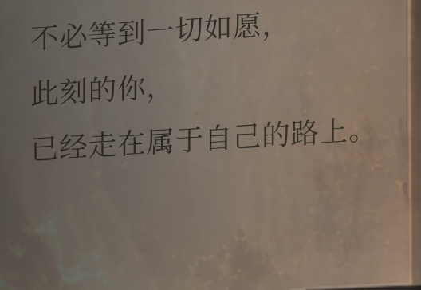
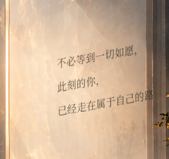
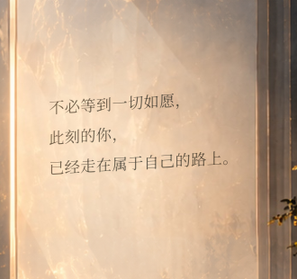
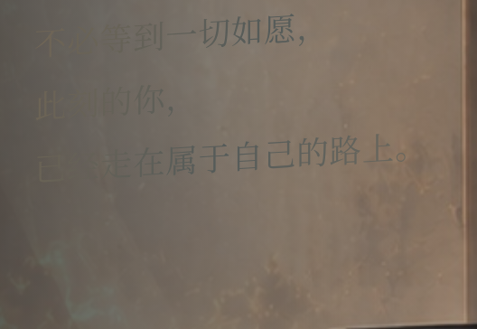
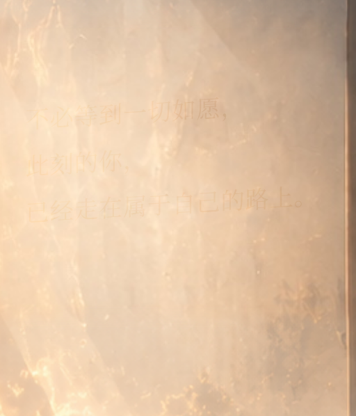
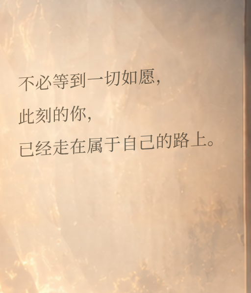

打开网站第六页镜面寄语：完整性与融合验收
旧版在 SVG foreignObject 中使用 HTML 3D 变换、多级固定裁剪和整景反射遮罩，WebKit 实际截图截掉了第三行尾字；DOM 边界测量却未揭示该绘制问题。手机另用按视口定位的备用文字，落在山景而非真实镜面。
现统一为直接 SVG 文字，跟随背景实际 cover 缩放和偏移；依据真实字体测量适配最长一行。去掉 3D、foreignObject、局部裁剪框、模糊和遮罩。使用温和字形透视、暖石墨色及仅作用于字形的 multiply 混合。三行原文保持不变。
窄屏原本把镜面裁出视口，现仅对第六页校正取景为 93% 水平对齐，并同步两层既有背景；没有重绘或修改图片像素。桌面正常取景保持原样。左侧标题、正文、语音、输入和导航均未移动。
指定尺寸实测
逐字检查不仅比对 DOM 文案和边界：在不改变字距的情况下逐个隐藏字形、截取画面并比较像素，确认包括最后句号在内的每个字符都确实被绘制。另测 1920×1080、768×1024、844×390、320×568；两引擎共 364 项逐字绘制检查通过。
镜面 2× 原生像素近照
 1440×900 · DPR 2，三个句子及末尾句号完整
1440×900 · DPR 2，三个句子及末尾句号完整
390×844 · DPR 2，文字位于真实镜面内WebKit 实际修复前后

旧版：第三行末尾被裁剪
新版：三行全部位于镜面有效范围光学方案实际对比

普通混合：暗镜面上的对比度不足
柔光：亮镜面中文字过于微弱，未采用最终采用上方的正片叠底：保留玻璃本身的明暗、反射和纹理，只改变字形与环境的色彩联系。没有背景板、发光或大片模糊。
原图旧字检查
原始参考艺术有旧字，项目已有同场景无字底图，既有局部去字合成继续使用该底图。下图隐藏新文字后，镜面没有旧字重影；本次无需生成新图片或添加纯色遮盖。

隐藏新寄语后的真实镜面 旧手机取景：镜面被裁出，备用文字漂浮在山景
旧手机取景：镜面被裁出，备用文字漂浮在山景全部尺寸预览
chromium · 七种屏幕尺寸
webkit · 七种屏幕尺寸
保护与性能验证
其他六页在 1920/390 宽度与修复前逐像素一致；桌面第六页镜面以外像素一致。第六页其他 UI 文案、字体及坐标保持。分享同意/拒绝/返回、词云与结束流程通过；第二、第四页玻璃弹窗样式未改。延迟背景请求时寄语保持隐藏，上一张完整场景保留；静置 1.5 秒记录 0 次 Paint，无新动画、滤镜或背景图片请求。构建及状态测试通过。
完整实测结果与逐字记录 · 弹窗与功能回归
环境限制：使用 Linux Chromium 与 Playwright WebKit，未实测 macOS Safari。Chromium 的外部字体 CSS 请求受云代理证书信任限制，沿用既有回退字体；未修改字体配置、下载替代字体或绕过 TLS。荆霄鹏行楷文件及授权仍未提供。真实麦克风硬件、真实 AI 后端未重测，其代码未改。